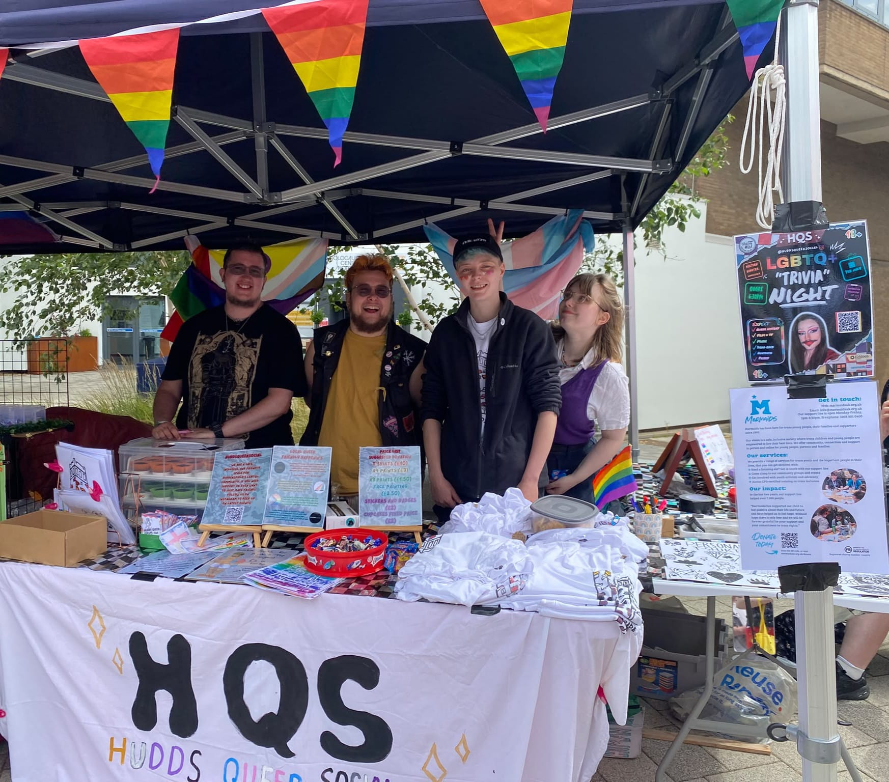
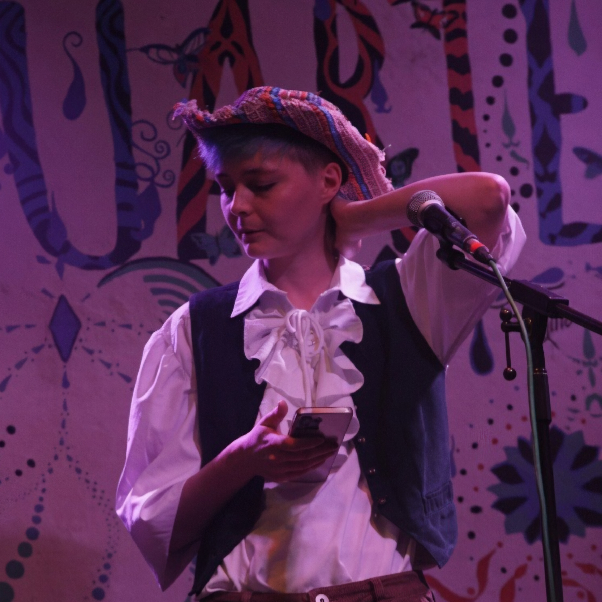

About HQS
Hudds Queer Social exists to create more affirming spaces for LGBTQIA+ people in and around Huddersfield.

We recognise the diversity and strengths within Huddersfield and believe that there are not enough affirming spaces for the LGBTQIA+ community.
HQS is about creating opportunities for people to meet, make friends and feel part of their local queer community. Whether you're looking for something social, creative, relaxed or simply somewhere to meet other people, there is space for you here.
Everyone under the LGBTQIA+ umbrella and our allies are welcome at HQS activities. Our aim is to build an atmosphere where people feel valued, respected and welcome.

“I have always struggled socially and didn't have many opportunities to make friends, so I wanted to create something for people who might be in the same position as me.
The idea really started with a conversation between Arik, Kai, Charlie and me. We felt Huddersfield needed something similar to the LGBTQ+ groups and communities in Leeds, such as Bent Collective. It can be difficult to make friends when you're not at university, and we thought that if all the gays were in one place, we'd have a much easier time making friends and building a community in our own town.
9 July 2025 was when the first message was sent in the group chat. From there, I handled pretty much everything up until the committee was formed, aside from hosting. I made the social media posts, hounded venues and local businesses to donate their time or products to our cause, and had meetings with businesses with the support of Ren and Charlie.
Eventually, I realised that HQS was going to reach a point where I simply wouldn't be able to do everything myself. That's when the committee began to form, allowing HQS to become something bigger than one person's project. What started as an idea to help people make friends has grown into a community of its own.
I'm incredibly proud of how far it has come, and excited to see where we can take it next.”
HQS is built by its community, and we're always looking for ways to make our events and spaces better for everyone.